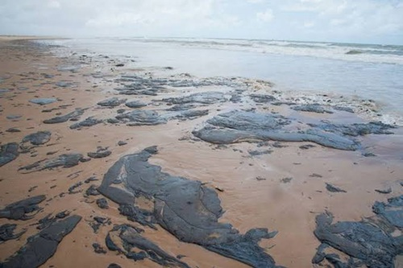

Cicatrices Imborrables: La Destrucción Silenciosa de las Costas
El impacto de un vertido no termina cuando el petróleo desaparece de la superficie; el verdadero desastre comienza cuando la marea empuja el crudo hacia la línea de la costa. Al tocar tierra, el hidrocarburo penetra profundamente en los sedimentos, la arena y las rocas, convirtiéndose en una bomba de tiempo ecológica. A diferencia del océano abierto, donde la dispersión es posible, en los ecosistemas costeros el petróleo queda atrapado en zonas de baja energía como bahías, estuarios y manglares. En estos lugares, la falta de oxígeno y luz reduce la degradación natural a niveles mínimos, lo que significa que el veneno persistirá allí durante décadas, transformando paraísos naturales en desiertos estériles.
Los manglares y las marismas, considerados las cunas de la vida marina, sufren daños devastadores. Las raíces aéreas de los manglares quedan completamente asfixiadas por la densa capa de alquitrán, bloqueando su sistema de filtración y provocando la muerte masiva de los árboles. La pérdida de estos bosques costeros rompe el escudo protector natural contra la erosión y los huracanes, dejando a las comunidades humanas vulnerables ante la fuerza del mar. Además, los compuestos tóxicos se filtran en los bancos de arena, destruyendo los santuarios de desove donde miles de tortugas marinas y aves playeras intentan perpetuar sus especies.